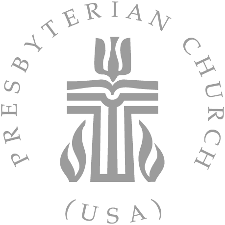

🇹🇼 台灣教會

Formosan Presbyterian Church
休士頓台灣長老教會 | Houston, Texas
A welcoming Taiwanese church community in Greater Houston, affiliated with the Presbyterian Church (USA).
We serve the Taiwanese community with worship, fellowship, and community programs.
Church Address
2401 S Dairy Ashford
Houston, TX 77077
Formosan Presbyterian Church Houston Taiwanese church Greater Houston PCUSA Presbyterian worship fellowship community 77077 Dairy Ashford Taiwanese people Taiwan Houston Texas church services Sunday worship Bible study prayer group Taiwanese community Houston area 台灣長老教會 休士頓台灣教會 德州台灣教會 休士頓華人教會 台灣人教會 長老教會休士頓 華人教會 台灣社區 休士頓華人 長老教會 基督教會 休士頓教會 德州教會 美國台灣教會